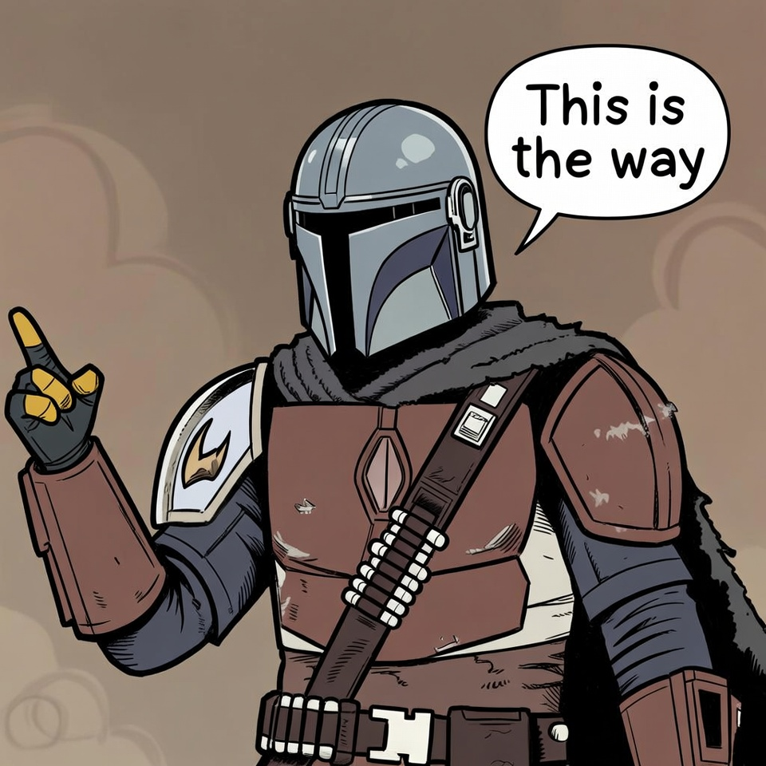

Last updated: 2026-08-03. This is a living post. New traps get added as they surface, and the number in the title will move. Changelog at the bottom.
I spent an afternoon standing up an agentic Power Platform environment. Claude Code, the Dataverse MCP server, PAC CLI, the whole chat to code to deploy loop that everyone is suddenly building.
The CLI lied to me seven times. Not "the docs were unclear" lied. Actually told me false things, in error messages, with confidence.
Props where props are due. Nick Doelman wrote Ditch the Power Apps Maker Portal, and that piece pointed me back to The Way.
I call it The Way like the Mandalorian does. A creed you hold onto even when the system works against you. I'm always hunting for ideas that lead back to The Way, and Nick's model is one of them. It's the path most solution architects are taking right now.

I chose a combination of Claude and Grok to build the pipeline out, and it took a full afternoon, several hours of getting everything laid in. Once it is done, it is pretty amazing.
First, where this is going. The goal is Microsoft MVP, Business Applications category, inside eleven months. The method: build real things on Power Platform and Dynamics 365 Field Service in the open, and write down what breaks. This post is day one output. Seven traps, one afternoon, from actually standing the environment up rather than reading about it. Coming next: Dataverse solution architecture, Power Pages, Field Service asset lifecycle, IoT and predictive maintenance, and Digital Product Passport work against the EU regulation that reached full application on 19 July 2026.
Everything in this post has a working, sanitized public counterpart: github.com/NukaSoft/agentic-powerplatform-pipeline. The full setup, a gotchas doc covering all seven lies, a setup script that checks for the .NET 10 SDK before it attempts the PAC install, and a verify script that resolves the version-pinned pac-mcp.dll path so the MCP server does not break silently on upgrade. The post stands alone. The repo is what you hand someone who wants to skip the pain.
Every one of these cost me time. A couple nearly cost me an environment. Here they are, in the order they bit me.
Lie 1 | winget hands you a fossil
You want PAC CLI. You do the obvious thing.
winget install Microsoft.PowerAppsCLICongratulations. You just installed version 1.0.
The current PAC CLI is 2.10.1. The winget manifest points at an MSI that has not moved in years. Nothing warns you. It installs cleanly, pac resolves, and you spend the next hour wondering why half the verbs in the docs do not exist.
What to do instead:
dotnet tool install --global Microsoft.PowerApps.CLI.ToolThat is the real distribution channel. Which brings us directly to lie number two.
Lie 2 | "DotnetToolSettings.xml was not found in the package"
You run the correct install command and get this:
The settings file in the tool's NuGet package is invalid:
Settings file 'DotnetToolSettings.xml' was not found in the package.
Tool 'microsoft.powerapps.cli.tool' failed to install.
Contact the tool author for assistance."Contact the tool author." Cool. So the package is broken, right?
The package is fine. I unzipped it to be sure. A .nupkg is just a zip, so you can check this yourself in about ten seconds. DotnetToolSettings.xml is sitting right there, under:
tools/net10.0/any/PAC CLI targets net10.0. If you only have the .NET 8 SDK, dotnet goes looking in tools/net8.0/, finds nothing, and blames the package instead of telling you the truth, which is that your SDK is too old.
Fix:
winget install --id Microsoft.DotNet.SDK.10 --exact
dotnet tool install --global Microsoft.PowerApps.CLI.ToolI lost a good chunk of time on this one because the error points you at the package author. It should say "no compatible target framework." It does not.
Lie 3 | a path to a file that does not exist
PAC ships its own MCP server now, which is genuinely great for agentic work. You ask where it lives:
pac copilot mcpIt tells you:
Local MCP server location: C:\Users\you\.dotnet\tools\.store\...\pac-mcp.exeThat file does not exist.
What exists is pac-mcp.dll. It is a framework dependent assembly, so you launch it with dotnet, not directly. The CLI prints a path to an executable that was never in the package.
What actually works:
claude mcp add powerplatform -- dotnet "C:\Users\you\.dotnet\tools\.store\microsoft.powerapps.cli.tool\2.10.1\microsoft.powerapps.cli.tool\2.10.1\tools\net10.0\any\pac-mcp.dll"While you are in there, note that path has the version number baked in twice. Upgrading PAC silently breaks your MCP server. Re run claude mcp add after every dotnet tool update or you will spend an evening wondering why your agent lost its hands.
Lie 4 | reporting failure on success
This is my favourite one, because it is so confidently wrong.
pac admin create --name "My Env" --type DeveloperOutput:
Creating Developer Dataverse database in your tenant.
...
Polling completed with status code : OK
Error: There is an error parsing the data. Property 'linkedEnvironmentMetadata' is missing.Read that again. Polling completed OK. Then an error.
The environment was created. It exists. It is healthy. PAC just could not parse the response it got back and decided that meant the operation failed.
If you trust the error and run the command again, you get a second environment. If you trust the error and go delete things, you are deleting a working environment for no reason.
Always confirm before you react:
pac env listLie 5 | "Is Disabled" does not mean what you think
You want to know whether you can install Field Service. Reasonable question.
pac admin list-app-templates --region unitedstatesTemplate Name Display Name Is Disabled
D365_FieldService Field Service TrueDisabled. Clear enough. No Field Service for you, go buy licenses.
I believed this. I wrote it down. I told my client it was a licensing problem.
Then Field Service installed fine.
These two commands gate on completely different things:
| Command | What it actually governs |
|---|---|
pac admin list-app-templates | Templates offered at environment creation time, for the --templates flag |
pac application install | Installing into an existing environment |
An app can be unavailable as a creation time template and still install perfectly well afterwards. The column is named Is Disabled with no scope on it whatsoever, and it will absolutely convince you that you have a licensing problem you do not have.
Do not diagnose entitlement from this table. Attempt the install and read the error.
Lie 6 | the one that nearly cost me an environment
This is the worst, and it is not even an error message. It is silence.
Fresh Sandbox, created with Dynamics 365 apps enabled. I check what is in it:
pac solution listCrf44fc Common Data Services Default Solution
Default Default Solution
DynamicsMKT_SendOptimization Dynamics Marketing Send OptimizationThree solutions. No Sales. No Customer Service. No msdyn_ anything.
A Dynamics 365 enabled environment has hundreds of solutions. Three means Dataverse only. And per Microsoft Learn, Enable Dynamics 365 apps cannot be changed after provisioning. So this environment is permanently useless and has to be deleted and rebuilt.
That is what I was about to say. Out loud. To the person who had just built it.
Instead I ran the install I actually wanted, as a test. It worked. Sales deployed without complaint.
I assumed this was lag. First party apps deploy asynchronously, so I figured the solutions would show up eventually and I had just looked too early.
They never showed up.
An hour after Field Service finished installing, pac solution list was still reporting the same three rows. So I queried the solution table directly:
pac org fetch --xmlFile .\solutions.xml<fetch>
<entity name="solution">
<attribute name="uniquename" />
<attribute name="version" />
</entity>
</fetch>Hundreds of solutions. Eighteen of them Field Service alone, FieldService_Anchor at 8.8.148.41 right at the top, ConnectedFieldService sitting there quite happily.
Same environment. Same auth profile. Same moment in time.
| Method | Solutions reported |
|---|---|
pac solution list | 3 |
FetchXML against solution | hundreds |
pac solution list is not slow. It is wrong, and it stays wrong. A fully loaded Dynamics 365 environment and an empty Dataverse one produce identical output from that command, which makes it worse than useless for the exact question everybody uses it to answer.
One more trap while you are here: passing FetchXML inline with --xml gets mangled by PowerShell quoting and dies with System.Xml.XmlException. Write it to a file and use --xmlFile.
The only reliable test for install capability is to attempt an install and read what comes back:
| Error | What it means |
|---|---|
Application successfully installed | Environment takes D365 apps |
Installing ... on CDS instance is not supported | Genuinely Dataverse only |
Package requested for installation was not found | You typed the app name wrong. Says nothing about the environment |
That third one is a bonus lie, by the way. It reads like a capability problem. It is a typo. Get exact names from pac application list --environment <id> instead of guessing.
Lie 7 | "Failed to install" when it just stopped watching
I wrote most of this post while waiting for Field Service to install. Then this landed:
Polling to check the status of your Application... Execution time: 01:00:23
Error: Failed to install application within maximum timeout of 60 minutesFailed to install. That is what it says.
The install had not failed. It was still running, perfectly happily, and the admin center was showing it progressing thru version 8.8.148.41 the entire time.
What actually happened is that PAC has a sixty minute polling ceiling and hit it. It stopped watching. That is all. The word for that is "timeout," and it is a completely different thing from "failed."
Field Service is a large install. Going past an hour is normal, not exceptional. So the default behaviour of this command is to eventually tell you your normal install failed.
If you wire that into CI, or hand it to an agent, you get a retry on an install that is already running. Nothing good is downstream of that.
Check the admin center. Do not re run the install.
Why this matters more than it used to
When a human runs a CLI, a bad error message costs an hour of confusion.
When an agent runs the CLI, a bad error message becomes a wrong conclusion, written into a document, acted on with confidence. I watched it happen in real time. My agent read Is Disabled = True and correctly concluded "licensing problem." Correct reasoning. Garbage input.
The fix is not smarter agents. The fix is the discipline of testing instead of inferring. Every one of these seven lies collapses the moment you run the actual operation and read the actual result. Every one of them survives indefinitely if you read a status field and reason from it.
That last one is the sharpest example. An agent that believes "Failed to install" retries an install that is already running. An agent that checks the admin center first does not. Same model, same prompt, completely different outcome, decided entirely by whether it trusted the error text.
If you are building an agentic Power Platform pipeline right now, and a lot of us are, write your gotchas file as you go. Mine has nine entries after one afternoon. And "as you go" is the load bearing part. The moment a lie bites you is the only moment you hold the exact error text, the real fix, and the proof in the same pair of hands. Write it down afterward and you are summarizing a memory. Write it down in the moment and you are filing evidence.
The CLI is still the right tool. It just is not a reliable narrator.
The working version of everything above lives in the companion repo: github.com/NukaSoft/agentic-powerplatform-pipeline. Take the setup, skip the afternoon.
Changelog
the seventh while the post was being written.
- 2026-08-03 | Published with seven. Started at six; the Field Service install timeout added
Pierre Hulsebus builds AI powered business solutions at NukaSoft.AI. Currently standing up an agentic Dynamics 365 pipeline and writing down everything that breaks.